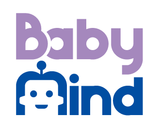
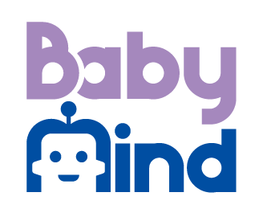

NeurIPS 2020 Workshop on BabyMind
How Babies Learn and How Machines Can Imitate
December 11th, 2020 @ NeurIPS 2020 (Virtual)


December 11th, 2020 @ NeurIPS 2020 (Virtual)


Deep neural network models have shown remarkable performance in tasks such as visual object recognition, speech recognition, and autonomous robot control. We have seen continuous improvements throughout the years which have led to these models surpassing human performance in a variety of tasks such as image classification, video games, and board games. However, the performance of deep learning models heavily relies on a massive amount of data, which requires huge time and effort to collect and label them.
Recently, to overcome these weaknesses and limitations, attention has shifted towards machine learning paradigms such as semi-supervised learning, incremental learning, and meta-learning which aim to be more data-efficient. However, these learning models still require a huge amount of data to achieve high performance on real-world problems. There has been only a few achievement or breakthrough, especially in terms of the ability to grasp abstract concepts and to generalize problems.
In contrast, human babies gradually make sense of the environment through their experiences, a process known as learning by doing, without a large amount of labeled data. They actively engage with their surroundings and explore the world through their own interactions. They gradually acquire the abstract concept of objects and develop the ability to generalize problems. Thus, if we understand how a baby's mind develops, we can imitate those learning processes in machines and thereby solve previously unsolved problems such as domain generalization and overcoming the stability-plasticity dilemma. In this workshop, we explore how these learning mechanisms can help us build human-level intelligence in machines.
In this interdisciplinary workshop, we bring together eminent researchers in Computer Science, Cognitive Science, Psychology, Brain Science, Developmental Robotics and various other related fields to discuss the below questions on babies vs. machines.
We will invite selected experts in the related fields to give insightful talks. We will also encourage interdisciplinary contributions from researchers in the above topics. Hence, we expect this workshop to be a good starting point for participants in various fields to discuss theoretical fundamentals, open problems, and major directions of further development in an exciting new area.
This workshop will invite researchers in the related fields for poster session in the following topics. Topics of interest include but are not limited to:
We invite submissions of papers as extended abstracts within 4 pages, excluding references or supplementary materials. All submissions must be in pdf format as a single file (incl. supplementary materials) using the template below and submitted through below CMT link. The review process is single-round and double-blind. All submissions have to be anonymized.
All accepted papers will be presented as posters during the workshop and listed on the website. Additionally, a small number of accepted papers will be selected to be presented as contributed talks.
Note that this workshop will not be part of the official proceedings. Accepted submissions will not be counted as publications. However, we discourage submissions of relevant work that has been previously published, or is to be presented at the main conference.
| Paper Submission Deadline | October 16, 2020 (11:59 PM UTC-12) |
|---|---|
| Notification to Authors | October 23, 2020 |
| Paper Camera-Ready Deadline | October 30, 2020 |
| Workshop Date | December 11, 2020 |
| Time | Presentation |
|---|---|
| 08:40 - 09:00 | Opening Remarks: BabyMind, Byoung-Tak Zhang (Seoul National University) and Gary Marcus (Robust AI) |
| 09:00 - 09:40 | Celeste Kidd (University of California, Berkeley) |
| 09:40 - 10:20 | Oliver Brock (Technical University of Berlin) |
| 10:20 - 10:45 | Coffee break & Discussions |
| 10:45 - 11:30 | Three Contributed Talks (15 minutes each) |
| 11:30 - 12:30 | Poster Session |
| 12:30 - 13:30 | Lunch Break |
| 13:30 - 15:00 | Six Contributed Talks (15 minutes each) |
| 15:00 - 15:30 | Coffee Break & Poster Session |
| 15:30 - 16:10 | Fei-Fei Li (Stanford University) |
| 16:10 - 16:50 | Josh Tenenbaum (Massachusetts Institute of Technology) |
| 15:50 - 17:30 | Pannel discussions, All invited speakers |
| 17:30 - 17:40 | Closing |
For more questions about the workshop and submissions, please email babymind.workshop@gmail.com